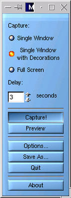
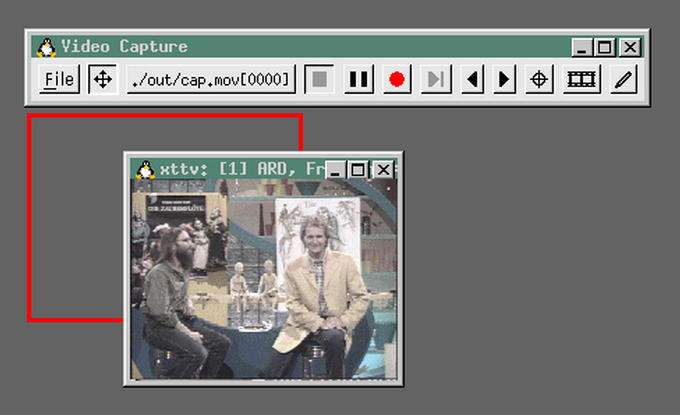

[successivo] [precedente] [inizio] [fine] [indice generale] [hall of fame] [indice analitico] [parte]
4.1.1) Come si cambia desktop manager in una distribuzione GNU/Linux Red Hat?
Una distribuzione GNU/Linux Red Hat dispone dell'eseguibile switchdesk che permette di scegliere il desktop manager preferito.
4.1.2) Come si fa a sapere la versione del server X?
Con il comando:
# X -version[Invio]
Questo comando restituisce versione, data di rilascio, sistema operativo, driver supportati, ecc.
4.1.3) Come si abilita e disabilita il login grafico?
Per fare in modo che all'avvio di GNU/Linux, non compaia il login dall'ambiente grafico X si deve disabilitare xdm o gdm; se si utilizza una distribuzione Debian GNU/Linux, si faccia riferimento alla LDR 4.1.4. Se si è in possesso di un'altra distribuzione, un modo per farlo è modificare il file /etc/inittab e dove c'è scritto:
id:5:initdefault:
occorrerà sostituire il 5 con un 3:
id:3:initdefault:
per cambiare livello di esecuzione (runlevel).
4.1.4) Come si abilita e disabilita il login grafico di una distribuzione GNU/Linux Debian?
In Debian non occorre cambiare il livello di esecuzione (runlevel) per eliminare la modalità grafica. La modalità grafica automatica si attiva o disattiva rispettivamente installando o rimuovendo il pacchetto che gestisce il login grafico stesso (che a scelta può essere xdm, gdm o wdm).
4.1.5) Perché l'utente root non riesce a lanciare applicazioni grafiche se il server X è stato lanciato da utente comune?
Qualsiasi utente che lancia un'applicazione grafica da un server X di un altro utente riceverà un messaggio simile al seguente:
Xlib: connection to ":0.0" refused by server Xlib: Client is not authorized to connect to Server Gtk-WARNING **: cannot open display: :0.0
Questo accade per motivi di sicurezza. L'utente proprietario del server X dovrà concedere il permesso di utilizzo del server agli altri utenti. L'autorizzazione viene concessa mediante il comando xhost. Quest'ultimo comando utilizzato con il carattere + concederà l'autorizzazione a tutti gli elaboratori e a tutti gli utenti:
$ xhost +[Invio]
Se invece si desiderasse concedere l'autorizzazione esclusivamente a una macchina o a un utente, si utilizzerà la seguente sintassi:
[+]nome
dove nome è il nome della macchina o dell'utente cui vogliamo concedere l'utilizzo dello schermo.
4.1.6) Come si può lanciare un'applicazione che gira sotto X senza attivare il gestore delle finestre?
Per lanciare un'applicazione in X senza che in quest'ultimo venga caricato il gestore delle finestre si dovrà utilizzare il comando xinit seguito dal nome dell'applicazione. Se ad esempio si volesse avviare solo Mozilla, si darà il comando:
$ xinit mozilla[Invio](1)
4.1.7) Come si lancia solamente X, senza gestori delle finestre?
Si può far partire il server X sullo sfondo senza gestori delle finestre permettendo così di avviare le applicazioni grafiche dalla console e mantenendo molto libero in termini di memoria l'ambiente grafico.
Per ottenere questo scopo, si dovrà innanzitutto avviare sullo sfondo X:
$ X &[Invio]
Si dovrà poi tornare, mediante la combinazione di tasti [Ctrl+Alt+F[1-6]] alla console da cui si era impartito il comando e esportare la variabile DISPLAY con il comando:
$ export DISPLAY=:0[Invio]
a questo punto si avrà l'autorizzazione per avviare applicazione grafiche. Si potrà digitare ad esempio:
$ xterm &[Invio]
per veder comparire un terminale grafico in X.
4.1.8) Come si possono catturare le immagini in GNU/Linux?
Per catturare le immagini in X si possono utilizzare diversi programmi ed applicativi. Gimp (2) ad esempio, permette di farlo attraverso il menù File e scegliendo Acquisizione e poi Screenshot.... Esistono però varie versioni di Gimp e la disposizione del comando di acquisizione potrebbe variare.
Oltre Gimp si deve ricordare MagiCapture (3), XVidCap (4) e l'applicativo di pannello di Gnome ScreenShooter.
|
 Figura 4.1. MagiCapture |
|
 Figura 4.2. XVidCap |
|
Figura 4.3. Gimp |
|
Figura 4.4. L'applicativo ScreenShooter del pannello di Gnome |
Per quanto riguarda i comandi da utilizzare per catturare lo schermo da console, si deve ricordare xwd (X Windows Dump). Ecco un esempio del suo utilizzo:
$ xwd -root > nome.xwd[Invio](5)
Questo comando cattura l'intero schermo. Si deve utilizzare xwud(6) per vedere le immagini:
$ xwud -in nome.xwd[Invio]
Un altro programma per console è scrot (7) .
4.1.9) Come si fa se i caratteri appaiono troppo piccoli in X ad alte risoluzioni?
Il problema nasce dal fatto che X usa, in maniera predefinita, una risoluzione di 75 dpi (Dot Per Inch), mentre i monitor sono ottimizzati per una risoluzione di 96 dpi.
Un modo per ovviare al problema è passare ad una risoluzione di 100 dpi. Si accede come utente root, e si controlla di avere il pacchetto 100dpi-fonts installato. Nel caso di una distribuzione Debian ad esempio, si darà il comando:
# dpkg -l | grep 100[Invio]
che, in caso di esito positivo restituirà un output simile al seguente:
ii xfonts-100dpi 3.3.6-2 100 dpi fonts for X
oppure, se si possiede una distribuzione Red Hat, si darà il comando:
# rpm -qa | grep 100[Invio]
Nel caso il pacchetto non risultasse presente, si dovrà procedere alla sua installazione.
Per prima cosa si dovrà aprire il file /etc/X11/fs/config o a seconda delle versioni /etc/X11/xfs/config con un editor, al fine di visualizzare le seguenti righe:
/usr/X11R6/lib/X11/fonts/75dpi:unscaled, /usr/X11R6/lib/X11/fonts/100dpi:unscaled,
A questo punto si dovrà invertire l'ordine delle due righe ottenendo quindi:
/usr/X11R6/lib/X11/fonts/100dpi:unscaled, /usr/X11R6/lib/X11/fonts/75dpi:unscaled,
Ecco inoltre altre modifiche da fare al file /etc/X11/fs/config, in cui la sezione con:
#100 x 100 and 75 x 75 default-resolutions = 75,75,100,100
dovrà essere sostituita con:
#100 x 100 and 75 x 75 default-resolutions=100,100,75,75
4.1.10) Come si può risolvere il blocco di X senza riavviare il sistema?
Se il server X si blocca, si può provare ad ucciderne il processo da un'altra console virtuale. Un altro metodo consiste nel premere la combinazione di tasti [Ctrl+Alt+Backspace] che dovrebbe uccidere il processo di X tornando alla console da cui esso è stato lanciato.
In genere queste due indicazioni sono sufficienti a gestire il blocco di X. Si deve però ricordare anche JSR (<http://www.geocities.com/CapeCanaveral/Lab/7731/jsr.html>) che serve per chiudere il server X o per riavviare il sistema tramite i tasti del joystick.
Oltre JSR, ricordiamo che è possibile includere durante la ricompilazione del kernel, il supporto per il tasto magic SysRQ key ([sysrq]). Questo tasto, sulle piattaforme i386 corrisponde al tasto [Stamp] o [Print Screen]. La combinazione di questo tasto con altri, permette di eseguire operazioni particolari. Ad esempio:
[Alt+sysrq+b] permetterà di riavviare il sistema immediatamente senza scaricare la memoria cache o smontare i dischi;
[Alt+sysrq+s] permetterà di scaricare nei dischi il contenuto della memoria cache. Questa operazione è caldamente consigliata prima di impartire [Alt+sysrq+b] per limitare al massimo la perdita dei dati;
[Alt+sysrq+u] smonterà tutti i file system. Questa operazione andrebbe eseguita prima di impartire [Alt+sysrq+b] e dopo [Alt+sysrq+s]. In genere infatti, in casi di emergenza, si utilizza la sequenza: [Alt+sysrq+s], [Alt+sysrq+u] e [Alt+sysrq+b];
[Alt+sysrq+k] ucciderà tutti i programmi presenti sulla console virtuale;
Fare in ogni caso riferimento al file /usr/src/linux/Documentation/sysrq.txt.
4.1.11) C'è un modo per aumentare le prestazioni del server X?
Si può procedere nel modo seguente:
si determina l'indirizzo in memoria del buffer video esaminando i messaggi del server X che appaiono durante l'avvio:
# startx 2> messaggi[Invio](8)
L'indirizzo si trova in una riga del tipo:
S3: PCI: trio32/64 rev 54 linear FB 0xe4000000
in questo caso di esempio è 0xe4000000;
In qualità di utente root si lancia il seguente comando:
# echo "base=0xe4000000 size=0x200000 (segue)[Invio]
type=write-combining" > /proc/mtrr
Il campo size è l'ammontare di memoria video (per il frame buffer) della vostra scheda video.
Fare in ogni caso riferimento al file /usr/src/linux/Documentation/mtrr.txt.
4.1.12) Come si possono capire gli errori del server X?
Molte volte risulta difficile visualizzare gli errori che possono apparire in corrispondenza dell'invocazione del server X. In questi casi risulta utile indirizzare tali errori su un file. Ecco un esempio:
$ startx 2> errori [Invio](9)
Per visualizzarlo, utilizziamo il comando cat (o il less):
# cat errori[Invio]
4.1.13) Come si imposta la risoluzione predefinita di X?
Per ottenere questo risultato occorre modificare il file /etc/XF86Config in modo tale che la risoluzione desiderata sia, in corrispondenza della profondità di colore prescelta, la prima. Se ad esempio si disponesse del seguente /etc/XF86Config:
Section "Screen"
Driver "accel"
Device "Primary Card"
Monitor "Primary Monitor"
DefaultColorDepth 16
SubSection "Display"
Depth 8
Modes "1600x1200" "1280x1024" "1152x864" "1024x768" "800x600"
EndSubSection
SubSection "Display"
Depth 16
Modes "1024x768" "800x600" "640x480"
Virtual 1024 768
EndSubSection
EndSection
la profondità di colori predefinita risulta essere 16 (DefaultColorDepth = 16). La risoluzione predefinita sarà allora 1024x768 come indicato dal primo valore della direttiva Modes.
4.1.14) Come si regola la profondità dei colori in X?
Si può impostare il valore della profondità di colore predefinito mediante la direttiva DefaultColorDepth presente in /etc/X11/XF86Config. Se ad esempio tale file sarà composto dalle seguenti righe:
Section "Screen"
Driver "svga"
Device "Chips & Technologies CT65550"
Monitor "DSTN"
DefaultColorDepth 16
Subsection "Display"
Depth 8
[...]
EndSubsection
Subsection "Display"
Depth 16
[...]
EndSubsection
la profondità dei colori sarà 16 bpp (bit per pixel).
Se invece si desiderasse impostare saltuariamente una profondità di colori diversa, si potrà farlo invocando il server X mediante l'opzione -- -bpp:
# startx -- -bpp 16[Invio]
# startx -- -bpp 24[Invio]
# startx -- -bpp 32[Invio]
Questi comandi imposteranno la profondità di colore del server X rispettivamente a 16, 24 e 32 bpp.
Un altro metodo ancora consiste nel modificare il file /etc/X11/xdm/Xservers (o /etc/X11/Xserver); nell'ultima riga si può impostare la profondità mediante l'opzione -bpp:
:0 local /usr/X11R6/bin/X -bpp 32
4.1.15) Come si elimina lo schermo virtuale?
Per eliminare lo schermo virtuale occorrerà modificare il file /etc/X11/XF86Config e commentare la riga Virtual presente nella sottosezione Display della sezione Screen.
4.1.16) Come si passa da una modalità all'altra dello schermo virtuale?
Per cambiare le modalità dello schermo virtuale si dovrà utilizzare la combinazione di tasti [Ctrl+Alt+num(+)] per passare dalla risoluzione attuale alla successiva e [Ctrl+Alt+num(-)] per passare a quella precedente.
4.1.17) L'immagine in X è decentrata, come posso risolvere questo problema?
Si può modificare la posizione dell'immagine all'interno dell'area del monitor mediante il programma xvidtune:
# xvidtune[Invio]
4.1.18) Come si apre una console testuale da X?
Dopo essere entrati in ambiente grafico, è possibile aprire una console testuale mediante la combinazione di tasti [Ctrl+Alt+Fn](10) Per effettuare operazioni da riga di comando occorre ricordare che la console testuale da cui si è invocato il server X risulterà occupata dal processo di X stesso.
4.1.19) Come si ritorna alla console grafica (X) dopo avere aperto una console testuale?
Per ritornare alla modalità grafica dopo essere entrati in una console testuale, si dovrà utilizzare la combinazione di tasti [Ctrl+Alt+Fn] dove [Fn] sarà il tasto funzione successivo a quello dell'ultima console testuale. Generalmente sono presenti 6 console testuali per cui il tasto funzione corrispondente alla modalità grafica è [F7]. Per valutare in ogni caso il numero di console testuali, occorrerà visualizzare il file /etc/inittab.
4.2.1) Come si chiude contemporaneamente Enlightenment e gnome-panel?
Per uscire correttamente da Gnome ed Enlightenment si dispone di due possibilità. Ambedue riguardano il contenuto del file ~/.xinitrc:
o si indica gnome-session;
oppure si inserisce qualcosa simile a:
enlightenment &
gmc &
panel
L'importante è che panel sia l'ultimo ad essere chiamato e che non sia lanciato in secondo piano (con &).
4.2.2) Come si configura in Gnome l'associazione tra file HTML e le applicazioni deputate a visionarle?
Qualora si utilizzasse il GNU Midnight Commander (l'edizione Gnome del file manager) e si volesse utilizzare lynx in un terminale grafico (xterm) al posto del navigatore predefinito (generalmente Netscape o Mozilla) per visualizzare le pagine .html si dovrà procedere nel modo seguente:
Si dovrà aprire il GNOME Contro Center, selezionare Tipi MIME modificare la voce text/html ed inserire nella voce Apri la riga:
xterm -e lynx %f
4.3.1) Come si impostano i temi di Enlightenment?
Occorre decomprimere il tema in ~/.englightenment.themes oppure in /usr/share/enlightenment/themes e poi sceglierlo dal menù di configurazione di Enlightenment.
4.3.2) Come si richiamano le finestre nascoste in Window Maker?
Se si utilizza Window Maker e si hanno più finestre aperte, è possibile passare da una ad un'altra mediante la combinazione di tasti [Alt+Tab]. Se le finestre che si desidera attivare sono minimizzate e le icone sono coperte dalla finestra corrente, si dovrà aggiungere:
NoWindowOverIcons = YES;
nel file ~/GNUstep/Defaults/WindowMaker.
Inoltre è possibile fare apparire l'elenco delle finestre premendo sullo sfondo il pulsante centrale del mouse (o i due pulsanti del mouse insieme). Questa operazione farà apparire l'elenco delle finestre attive. Se si sposta questo elenco in basso sulla scrivania lasciando in evidenza solamente il titolo di questo elenco, sarà possibile sollevarlo ogni volta che ci passa sopra il puntatore del mouse. Inoltre questo elenco è sempre in primo piano. Si otterrà quindi un elenco delle finestre a scomparsa.
4.3.3) Come si impostano i temi di Window Maker?
Per installare un tema in Window Maker, si dovrà decomprimere il relativo pacchetto all'interno di ~/GNUstep/Library/WindowMaker/Themes.
4.3.4) Come si configura IceWM?
I file di configurazione di IceWM sono menu, preferences, taskbar, toolbar e winoptions presenti nella directory $HOME/.icewm(11).
4.3.5) Come si aggiungono pulsanti sulla barra di IceWM?
Occorre modificare il file toolbar presente in $HOME/.icewm(12). La sintassi di questo file è abbastanza intuitiva. Eccone un esempio:
prog XTerm xterm xterm -ls -fg white -bg black -fn 7x14
prog Mutt xterm xterm -fn 10x20 -T "Mutt" -e /usr/bin/mutt
prog ppp ppp pppd
prog Var vlm xterm -e tail -f /var/log/messages
prog gftp ftp gftp
prog gimp gimp gimp
prog gv gv gv
prog gVIM gvim gvim
prog Halt halt shutdown -h now
prog Reboot riavvio shutdown -r now
prog Xconsole xcon xconsole -fn 6x10
-geometry 485x100+470+0 -file /dev/xconsole &
4.3.6) Come si imposta lo sfondo di IceWM?
Per impostare un'immagine di sfondo utilizzando IceWM, occorrerà modificare il file preferences presente nella directory $HOME/.icewm. In questo file saranno presenti tra le altre due variabili, la prima:
DesktopBackgroundImage="./immagini/sfondo.xpm"
utilizzata per dichiarare il nome dell'immagine di sfondo e la seconda:
# Display desktop background centered and not tiled DesktopBackgroundCenter=0 # 0/1
da utilizzare per centrare o meno l'immagine stessa. Se si volesse utilizzare un programma esterno per impostare l'immagine di sfondo, occorrerà lasciare vuoto il parametro così:
DesktopBackgroundImage=""
4.4.1) Perché le applicazioni lanciate da un terminale grafico scompaiono alla chiusura del terminale stesso?
Durante la sua «vita», un processo può allocare molte risorse (memoria, finestre, aprire file ecc.). Il sistema tiene traccia di tutto ciò che è legato ad un processo e, quando questo termina, si preoccupa anche di liberare le risorse eventualmente dimenticate dal processo stesso. Questo è utilissimo ad esempio quando un programma genera un segmentation fault; dal momento che il processo è terminato in modo anomalo, lascerebbe in giro molta «sporcizia» che viene pulita dal sistema operativo. É il bello di UNIX: ecco perché è possibile avere una macchina che gira per anni senza doverla mai spegnere: perché il sistema si occupa di mantenere pulito sé stesso. Ad esempio, quando dall'interprete dei comandi si impartisce il comando ls, il processo dell'interprete dei comandi lancia un sotto-processo «ls». Tecnicamente, si dice che l'interprete dei comandi esegue una fork() con ls. Dal momento che l'interprete dei comandi è un processo come un altro, se questo viene chiuso, il sistema si occupa di chiudere tutti i sotto processi ad esso collegati, quindi anche eventuali comandi lanciati con l'opzione di spawn (&).
Per evitare che un sotto-processo termini alla chiusura del «genitore», esiste il comando nohup (No Hang-Up) che assegna come padre del sotto-processo, non l'interprete dei comandi dal quale il sotto processo è stato lanciato, ma init (processo 1) che non può mai essere chiuso, in quanto è il padre di tutti i processi. Per avere un riscontro di tutto ciò si può utilizzare pstree.
4.4.2) Come è possibile conferire le stesse impostazioni della console testuale ai terminali grafici?
Per mantenere le stesse impostazioni della console testuale anche nei terminali grafici, occorrerà lanciare il terminale grafico stesso con l'opzione -ls:
$ xterm -ls[Invio]
Questo comando invocherà la shell come una shell di login (fare riferimento alla LDR 1.9.3).
4.4.3) Come si fa a lanciare un'applicazione da terminale grafico dopo avere assunto l'identità di un altro utente?
Lanciando un'applicazione grafica in qualità di utente diverso dall'utente proprietario del server X, si riceve un messaggio simile al seguente:
Xlib: connection to ":0.0 " refused by server Xlib: Client is not authorized to connect to Server ******: cannot connect to x server :0
Ogni utente per motivi di sicurezza ha un file nella sua directory personale (~) che si chiama .Xauthority. Quest'ultimo contiene le informazioni per accedere ai vari display locali e remoti che richiedono autenticazione. Se non si da all'utente che lancia l'applicativo, il permesso di accedere al display egli verrà respinto dal server stesso in quanto non è in grado di autenticarsi a questo. Il metodo da adottare in questi casi è quello di utilizzare xauth per esportare la chiave di autenticazione nel file ~/.Xauthority.
Supponendo che l'utente proprietario del display sia tizio e che la sua directory personale (~) sia /home/tizio/, si dovrà estrarre la chiave da /home/tizio/.Xauthority e metterla in /root/.Xauthority. Il tutto si traduce nel comando:
# xauth -f /home/tizio/.Xauthority extract - :0|xauth merge -[Invio]
In questo modo l'utente root sarà in grado di avviare applicazioni grafiche dal display di tizio.
Gli utilizzatori della distribuzione Mandrake devono tenere presente che il file .Xauthority degli utenti, che ha permessi 600 per motivi di sicurezza, dopo questo comando diventa di proprietà di root, quindi l'utente che è proprietario del display non può più autenticarsi e non riesce più ad avviare le applicazioni grafiche. Su questa distribuzione quindi, oltre al comando sopracitato è necessario il comando:
# chown tizio. gruppo_di_tizio /home/tizio/.Xauthority[Invio]
4.4.4) Come si impostano i colori del terminale grafico?
Si utilizzano le opzioni -fg e -bg per cambiare rispettivamente il colore dei caratteri e dello sfondo. Ecco un esempio:
$ xterm -fg white -bg black [Invio]
4.4.5) Come si impostano in maniera predefinita i colori del terminale grafico?
Per conferire al terminale grafico un determinato aspetto (colori del testo, colori dello sfondo, tipo di carattere) si dovranno mettere nel file ~/.Xresources le seguenti righe, indicando i valori desiderati:
XTerm*foreground: white XTerm*background: black XTerm*font: -*-lucidatypewriter-medium-r-normal-sans-14-140-75-75-m-90-*-*
4.4.6) Perché non funzionano più i terminali grafici?
Può capitare che i terminali grafici cessino di funzionare correttamente nelle distribuzioni Red Hat versione 6.0.
Il problema risiede nel file /etc/fstab:
/dev/hda3 / ext2 defaults 1 1 /dev/hda4 swap swap defaults 0 0 /dev/fd0 /mnt/floppy ext2 noauto 0 0 /dev/cdrom /mnt/cdrom iso9660 noauto,ro 0 0 none /proc proc defaults 0 0 none /dev/pts devpts mode=0622 0 0
Probabilmente è stata omessa l'ultima riga (none /dev/pts devpts ecc.)
4.4.7) Come imposto il comportamento del tasto [Canc] nel terminale grafico?
Per cambiare il comportamento del tasto «Canc» nei terminali grafici (xterm) se ad esempio avesse lo stesso comportamento del tasto «Backspace», si dovrà utilizzare xmodmap. Lanciandolo con l'opzione -pke e dirigendo l'output su un file si sarà in grado di visualizzare i codici di tutti i tasti.
Trovato il codice di interesse, si darà il comando:
$ xmodmap -e "keycode xxx=KP_Delete"[Invio]
dove xxx è il numero di codice ottenuto. Per trovare il codice tasto si può anche usare xev premendo poi il tasto interessato e leggendo il numero restituito.
4.4.8) Come funziona il copia ed incolla in X?
Per effettuare operazioni di copia ed incolla in X, si dovrà evidenziare con il tasto sinistro del mouse il testo interessato e premere il tasto centrale (se si dispone di un mouse a due tasti si dovranno premere questi due insieme) nel punto di destinazione.
LDR --- Copyright © 1999-2001 Gaetano Paolone -- bigpaul @ linuxfaq.it1) ammesso che mozilla sia il nome dell'eseguibile dell'applicazione. Indicare eventualmente il percorso qualora non sia risolto automaticamente.
2) Gimp GPL
3) MagiCapture GPL
4) XVidCap GPL
5) nome sarà il nome del file in formato .xwd.
6) se non si disponesse di pacchetti quali Gimp o simili.
7) scrot BSD
8) dove messaggi conterrà l'output del server X.
9) dove errori è il file in cui vengono indirizzati gli errori.
10) dove n è un numero che generalmente va da 1 a 6. (Verificare il file /etc/inittab per il numero di console virtuali.
11) In questo modo le configurazioni saranno esclusivamente proprie dell'utente. Se si volessero rendere effettive le modifiche per tutti gli utenti del sistema si dovranno modificare i file presenti in /usr/X11R6/lib/X11/icewm
12) o /usr/X11R6/lib/X11/icewm per estendere le modifiche a tutto il sistema
Dovrebbe essere possibile fare riferimento a questa pagina anche con il nome x.html
[successivo] [precedente] [inizio] [fine] [indice generale] [hall of fame] [indice analitico]